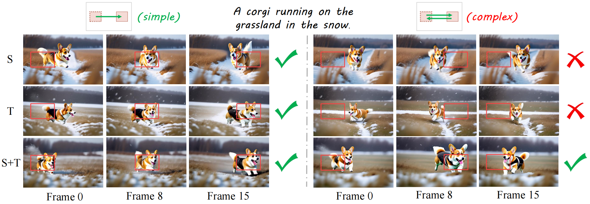

Text2Video
Click to Play the Videos!
Image2Video
Reference image
VideoCrafter2
FreeTailor
Methodology
We propose FreeTailor, a tuning-free method that achieves trajectory-controllable video generation by leveraging
the noise-generation dependency.
Specifically, we comprehensively delve into the 3D spatio-temporal distribution in initial noise and reveal that
the spatio-temporal anomalous noise regions can more effectively control motion trajectory of generated content in
various trajectories.

With this insight, we further design the spatio-temporal anomalous regions based on variance deviation and noise
reuse, and then utilize them to achieve initial noise customization for trajectory-controllable video generation.
Additionally, we utilize minimal attention modifications to prevent the influence of anomalous regions from
leaking into the background.
Project page template is borrowed from DreamBooth.